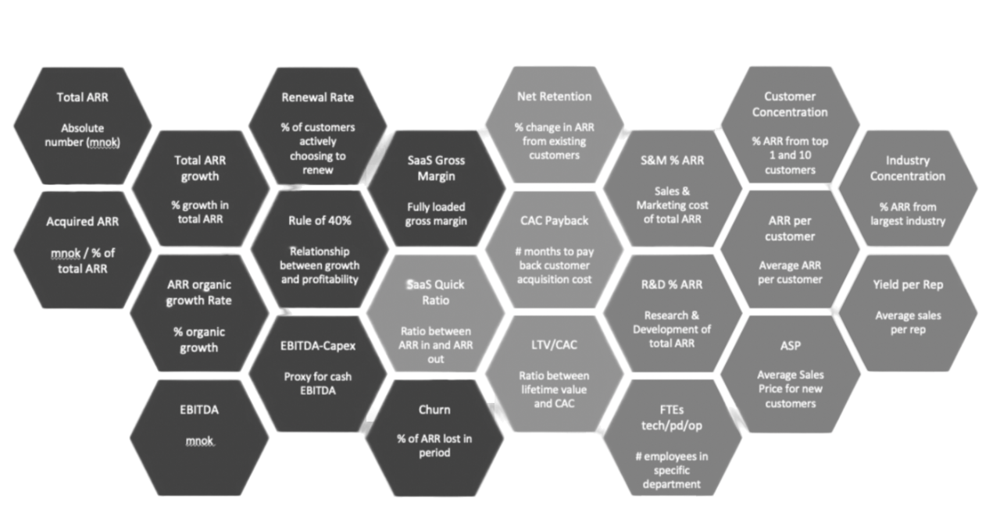
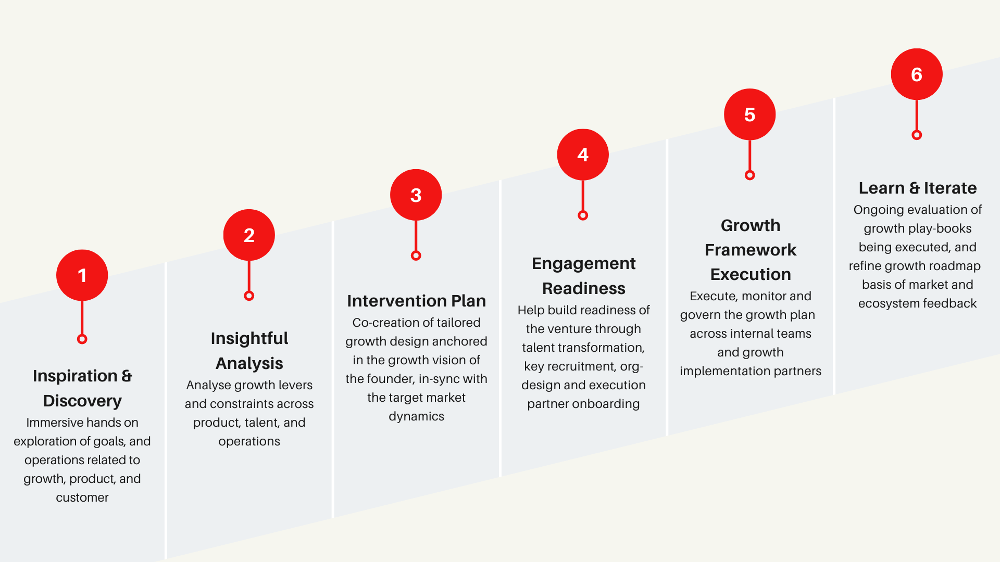
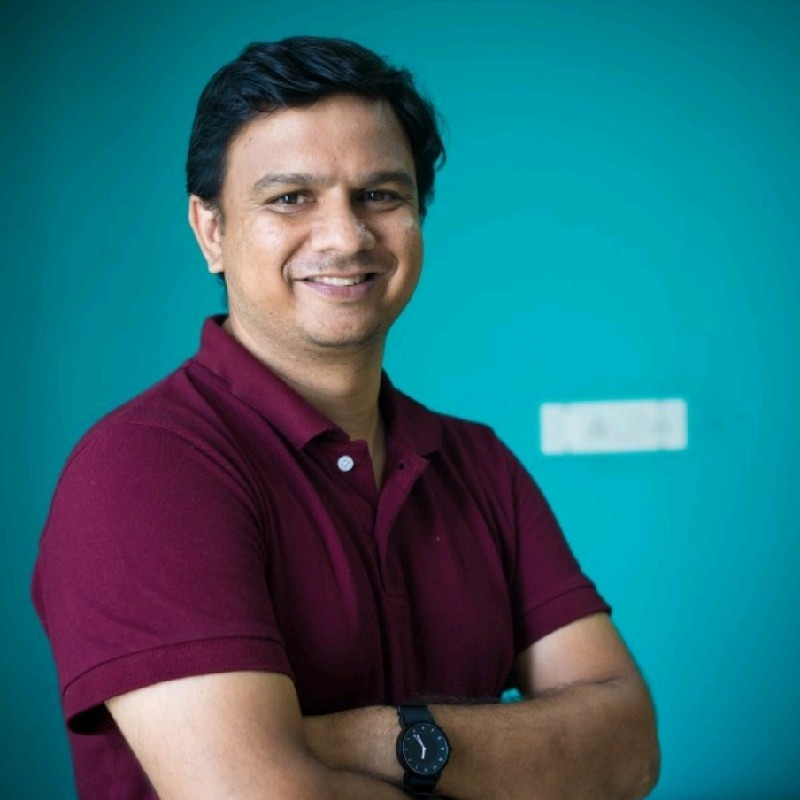
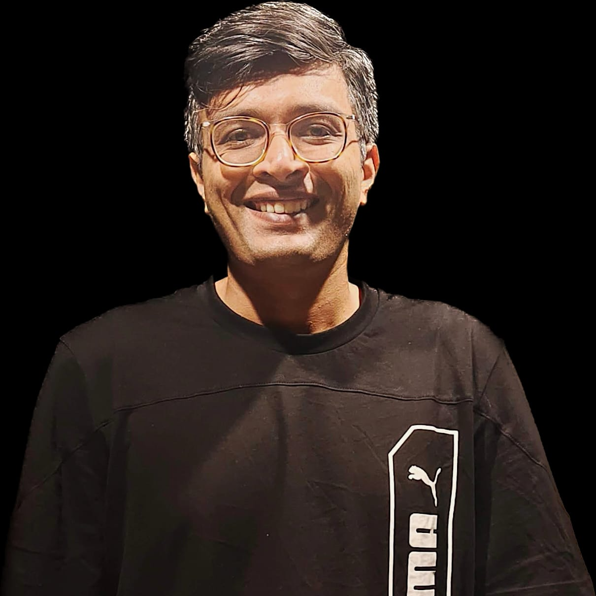
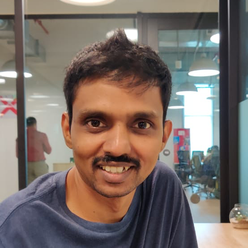
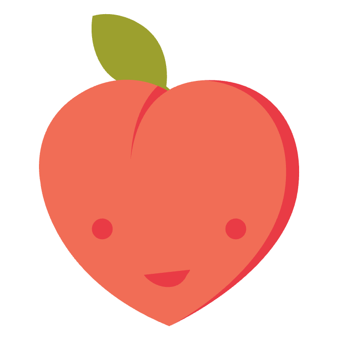

Designing great
SaaS businesses
can be hard
We empower you to achieve growth by design
Who we work with
We help SaaS ventures at USD 0.5 to 1 million ARR grow to ARR of USD 5 million and achieve healthy fundamentals.

Key Areas
where we help SaaS businesses
Go-to-Market Strategy and Funnel Optimization
1
.
Develop effective go-to-market strategies targeting the right customers, utilizing appropriate channels, and optimizing marketing spend to maximize returns
2
.
Define and set up the GTM funnel with the right tools.
3
.
Establish an analytical framework to optimize marketing and sales funnels, driving more leads and increasing revenue.
Revenue and Business Model Design
1
.
Collaborate to develop a customized revenue and business model aligned with company goals and needs.
2
.
Include everything from pricing strategy and revenue forecasting to optimization.
3
.
Guide in devising a product pricing strategy that best suits the business model.
Sales and Customer Success Systems Design
1
.
Set up hunting and farming sales teams and provide necessary coaching.
2
.
Design and implement customer success systems that improve retention, reduce churn, and maximize customer lifetime value.
3
.
Put in place a well-structured incentive system to motivate sales teams and boost performance.
Empowerment and Partner Ecosystem Development
1
.
Uncover core strengths and identify areas for maximum impact using our unique Empowerment Model.
2
.
Conduct a comprehensive analysis of the company’s customer base, product offering, and team dynamics.
3
.
Assist in building and growing a robust partner ecosystem, expanding reach and unlocking new revenue streams.
Product-Ops and Product-Growth Design
1
.
Product strategy, roadmap design, and prioritisation
2
.
Demo design and sales enablement
3
.
User Research and customer discovery
4
.
Product ops design and process enhancement
5
.
Product analytics design and insight enhancement
6
.
PLG design and refinement strategy
Growth execution support
1
.
Performance and affiliate marketing
2
.
Account and field marketing
3
.
Inside sales partners and revenue operations
4
.
Customer onboarding and post sales support
5
.
Product engineering for growth
6
.
Shared services ( compliance, people, and GCCs) for growth
Our Engagement Model

The
team
behind BetaCrafts

Kausal Sarda
Kaushal is a serial SaaS entrepreneur having experience building 2 SaaS businesses from scratch and scaling one of them (Finvolv) beyond 4 million in ARR. He also invests in SaaS businesses ( e.g. Minjar - acquired by Nutanix). In the past as CEO of Kuliza he helped more than 150 ventures (across India and silicon valley) design and engineer great products. He is currently working as a venture partner with UC Impower a early growth impact fund by Unitus Capital.

Vinod Chandramouli
Vinod Chandramouli is a seasoned GTM Strategy and Sales Leadership professional with nearly two decades of experience. He co-founded Mycelium Ecology and mentors at NSRCEL, IIM B, leveraging his deep knowledge in SaaS. His notable contributions include fostering Freshworks’ growth to IPO and leading teams at Akamai and Plum Benefits. Using a first-principles approach, Vinod continues to apply his extensive corporate experience to tackle new entrepreneurial challenges and opportunities.
Abishek Murthy
Abishek Murthy, a seasoned marketing professional with over 15 years of experience, is known for his strategic contributions to the tech sector. Notably, he built the Sales Development Representative (SDR) team at Freshworks from scratch. After serving as the Chief Growth Officer at Lummo, Murthy is now using his marketing expertise to advise startups.

Suresh Harikrishnan
Suresh is the founder of Gumstack and Peach, a modern communication stack for businesses. He has built products for the web, desktop and mobile platforms for almost 2 decades. He has been part of amazing teams ThoughtWorks and Computer Associates before. Before Gumstack, Suresh built Nudgespot, a marketing tech product that got acquired by BoomTrain.
Our
Clients


Our vertical & horizontal SaaS Sectors of
Interest & Expertise
Customer Success SaaS
Partner & Ecosystem SaaS
Talent & HR SaaS
Finance & Compliance SaaS
Engineering & IT SaaS
Business Intelligence SaaS
We help you redesign your SaaS business by
advising
on
1
SaaS Business Design
Every interaction matters. A SaaS business must be held accountable for the entire experience, not just a part. In a competitive landscape, one negative interaction has the power to damage a relationship. We advise SaaS business to find the breakdowns in customer experiences and latent issues and then craft a strategy to fix them both. We help them design an ecosystem (not just the product in isolation) that works in unison and creates an experience that drives them ahead of the competition.
2
SaaS Product Design
The evolution from physical to digital requires attention to detail every step of the way. Digital design is more than a pretty user interface. It is the synergy of two elements—a powerful tool for the task at hand, refined to a minimal ideal. The most effective product design is the one you hardly notice. We advise SaaS companies on how they can tackle their journey of digital evolution.
3
SaaS Positioning and Messaging Design
There have never been more SaaS products, more innovation, more noise. It’s not enough to simply be the better technology. You have to show people how your technology could make their life better.
Many SaaS companies try to convey the power of their solutions with “tech talk” - it’s all about the cool features and functionality. But this approach doesn’t work. Prospects tune out the buzzwords and move on.
We believe in a better way. The approach that we prefer is one that makes sure you tell a story that hits home with your prospects. The goal is to help you sell the value of complex products, differentiate from competitors and own your truth as an organisation.Our
Ethos
1
Get out of the building - Empathy is everything
We can only learn human needs—and uncover problem areas—by meeting people where they are. So we engage people in thoughtful dialogue and watch them work and play, in their space, not ours.
2
Iterate with curiosity
Evolution requires being open to change. Human systems are flexible, should be questioned, and can be altered. We scrutinise assumptions and go all the way back to root causes to begin our explorations.
3
Don’t just talk about it. Make it
Pictures have power. We go out of our way to bring ideas to life through visualisations that shape stories, have meaning, and bolster support.
4
Have an opinion
Big transformation comes from bold ideas. We bring unique perspectives to the table to help drive great work forward.
5
Live and die by quality
Work is only as good as the caliber of the people creating it. We scale our team thoughtfully—and pitch who you get—which makes every project team an A team.